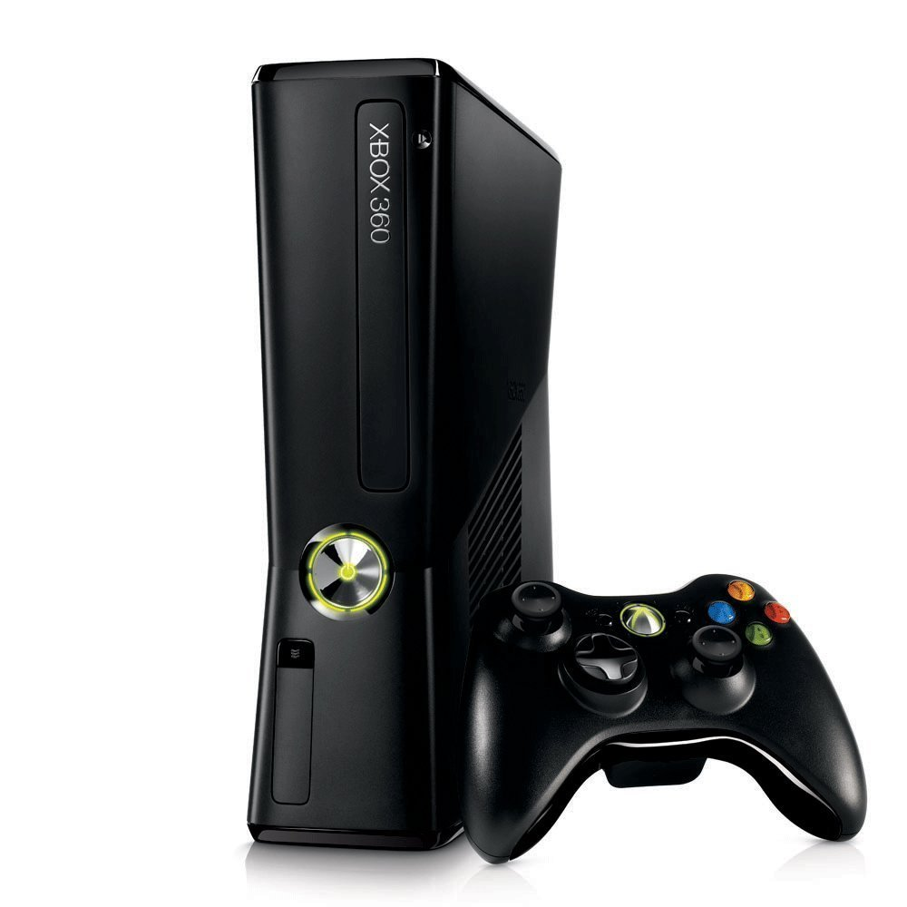
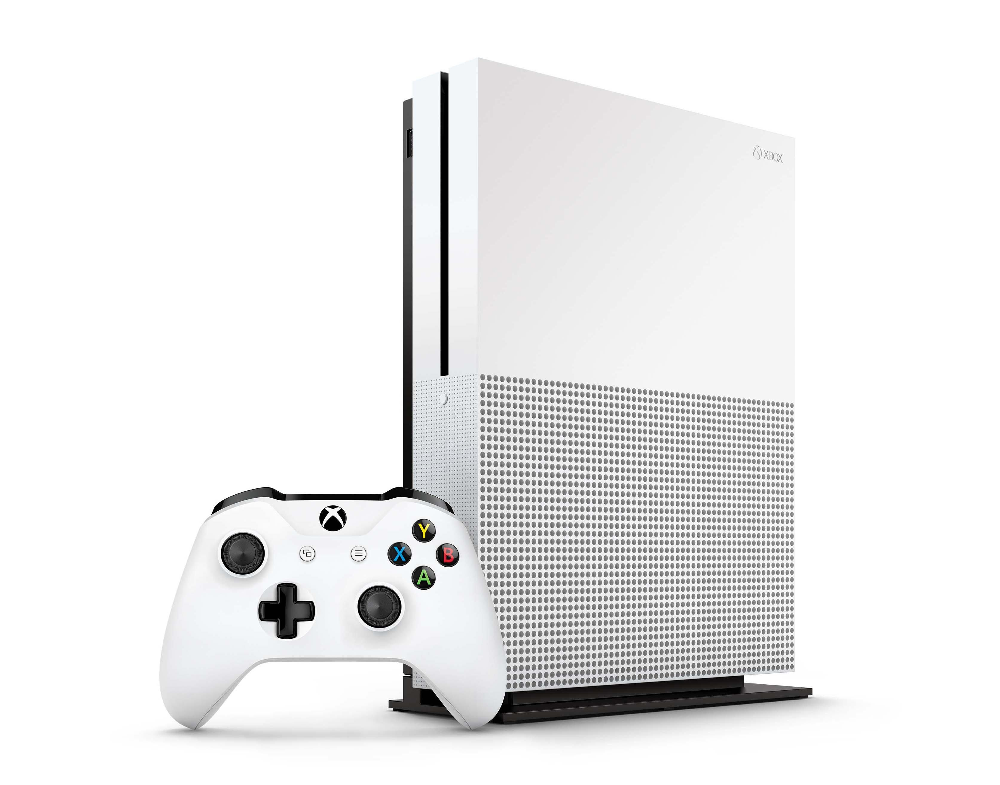
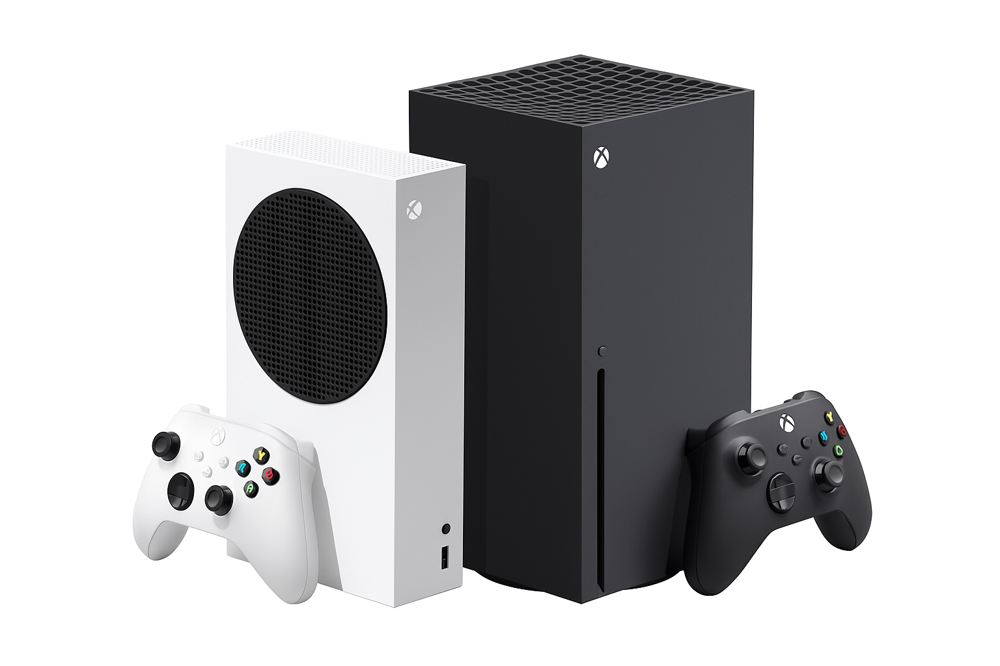

XBOX
La marca Xbox, propiedad de Microsoft, ha sido una de las fuerzas más influyentes en la industria del videojuego desde su debut a principios del siglo XXI. Su evolución a lo largo de las generaciones ha marcado hitos técnicos y comerciales, transformando el entretenimiento digital e introduciendo nuevas formas de jugar y conectarse. A lo largo de los años, Xbox ha lanzado consolas icónicas como la Xbox original, la Xbox 360, la Xbox One y, más recientemente, la familia Xbox Series, que incluye la Xbox Series S y la potente Xbox Series X.
CONSOLAS
Primera Generación - Xbox
El primer paso de Microsoft en el mundo de las consolas llegó el 15 de noviembre de 2001, cuando lanzó la Xbox original en Estados Unidos. Esta consola fue concebida como una respuesta directa al dominio de Sony con la PlayStation 2 y al legado de Nintendo. Fue impulsada por un equipo liderado por Seamus Blackley, quien convenció a la empresa de entrar en el mundo de los videojuegos domésticos. La Xbox original fue innovadora en varios aspectos. Fue la primera consola en incluir un disco duro interno, lo que permitió guardar partidas sin necesidad de tarjetas de memoria. También tenía soporte para conexión a Internet mediante banda ancha, lo que sentó las bases para Xbox Live, el servicio en línea que revolucionaría el juego multijugador en consolas. Uno de sus mayores logros fue el lanzamiento de Halo: Combat Evolved, un shooter en primera persona que se convirtió en un éxito inmediato. Halo no solo demostró la potencia técnica de la consola, sino que también se convirtió en el estandarte de la marca, iniciando una de las franquicias más importantes en la historia de los videojuegos. A pesar de su innovación, la Xbox original tuvo dificultades para competir en ventas frente a la PlayStation 2, que ya contaba con una enorme base de usuarios. Aun así, Microsoft había plantado una semilla importante.
Top 5 de los juegos mas jugados
Segunda Generación - Xbox 360
La segunda generación de consolas de Microsoft, la Xbox 360, fue lanzada en 2005, adelantándose a sus competidoras directas, la PlayStation 3 y la Nintendo Wii. Este movimiento estratégico permitió a Xbox ganar terreno rápidamente en el mercado. La Xbox 360 fue muy bien recibida por su arquitectura técnica avanzada y, sobre todo, por la consolidación de Xbox Live. El servicio en línea se perfeccionó, ofreciendo chat de voz, listas de amigos, logros (achievements) y un marketplace donde se podían descargar juegos, demos y contenido adicional. La Xbox 360 también introdujo el concepto de “Gamertag” y “GamerScore”, elementos que fomentaban la identidad y la competencia entre jugadores. Además, esta generación fue testigo de grandes títulos exclusivos como Gears of War, Halo 3, Fable II, y Forza Motorsport 2. También fue la época en la que los estudios independientes encontraron un espacio en Xbox Live Arcade, lo que dio visibilidad a nuevas formas de creatividad. Sin embargo, no todo fue positivo. La consola sufrió una crisis conocida como el “anillo rojo de la muerte” (Red Ring of Death), un fallo de hardware que afectó a millones de unidades. Microsoft respondió ofreciendo reemplazos gratuitos y una extensión de la garantía, lo cual fortaleció la lealtad de los usuarios pese al problema.
Top 5 de los juegos mas jugados Tercera Generación - Xbox One
La Xbox One fue lanzada en noviembre de 2013, con la ambición de ser más que una consola: Microsoft la presentó como un “centro de entretenimiento todo en uno” (de ahí su nombre). Su enfoque inicial, sin embargo, generó críticas: requería conexión permanente a Internet, tenía políticas restrictivas sobre el intercambio de juegos físicos, y enfatizaba funciones multimedia más que el propio juego. Sony aprovechó estos errores en el lanzamiento de la PlayStation 4, generando una percepción más amigable con los jugadores, lo que afectó notablemente las ventas de la Xbox One en sus primeros años. Aun así, con el paso del tiempo, Microsoft corrigió el rumbo. Quitaron las restricciones, mejoraron la interfaz, potenciaron Xbox Live y comenzaron a apostar por servicios como Xbox Game Pass. Además, se lanzó una versión más potente y estilizada: la Xbox One X en 2017, que permitió jugar en 4K nativo, siendo en ese momento la consola más potente del mercado. Durante esta generación, títulos como Halo 5: Guardians, Sunset Overdrive, Ori and the Blind Forest, y la expansión de la saga Forza mantuvieron el interés por la consola. No obstante, se criticó la falta de nuevas IPs exclusivas de alto impacto frente a lo que ofrecía la competencia.
Top 5 de los juegos mas jugados Cuarta generación - Xbox Series X y Series S
La cuarta generación de consolas Xbox llegó en noviembre de 2020 con dos modelos: la Xbox Series X, como la versión más potente y orientada a jugadores hardcore, y la Xbox Series S, una opción más económica y completamente digital. La Xbox Series X ofrece una potencia gráfica impresionante, con capacidad de hasta 12 teraflops, soporte para ray tracing, resoluciones hasta 8K, y tasas de refresco de hasta 120 FPS. También introduce el uso de SSD NVMe, lo que reduce significativamente los tiempos de carga y permite experiencias más fluidas. Uno de los pilares de esta generación no es solamente el hardware, sino el ecosistema. Microsoft ha apostado por un enfoque inclusivo y flexible, donde los jugadores pueden disfrutar de sus juegos en consola, PC o dispositivos móviles a través de la nube. Esto ha sido posible gracias a Xbox Game Pass, una suscripción que ofrece acceso a cientos de juegos, incluyendo lanzamientos el mismo día de su estreno, como los títulos de Bethesda y otros estudios adquiridos por Microsoft. El compromiso con la retrocompatibilidad también ha sido clave. La Series X puede jugar títulos de todas las generaciones anteriores de Xbox, algunos de ellos con mejoras gráficas y de rendimiento notables.
Top 5 de los juegos mas jugados En la actualidad
La estrategia de servicios y estudios Más allá de las consolas, el éxito actual de Xbox también se basa en su estrategia de servicios y adquisiciones. Con Game Pass como punta de lanza, Microsoft ha cambiado el modelo tradicional de consumo de videojuegos. Al estilo de Netflix, los jugadores pueden acceder a un catálogo rotativo de títulos por una tarifa mensual.